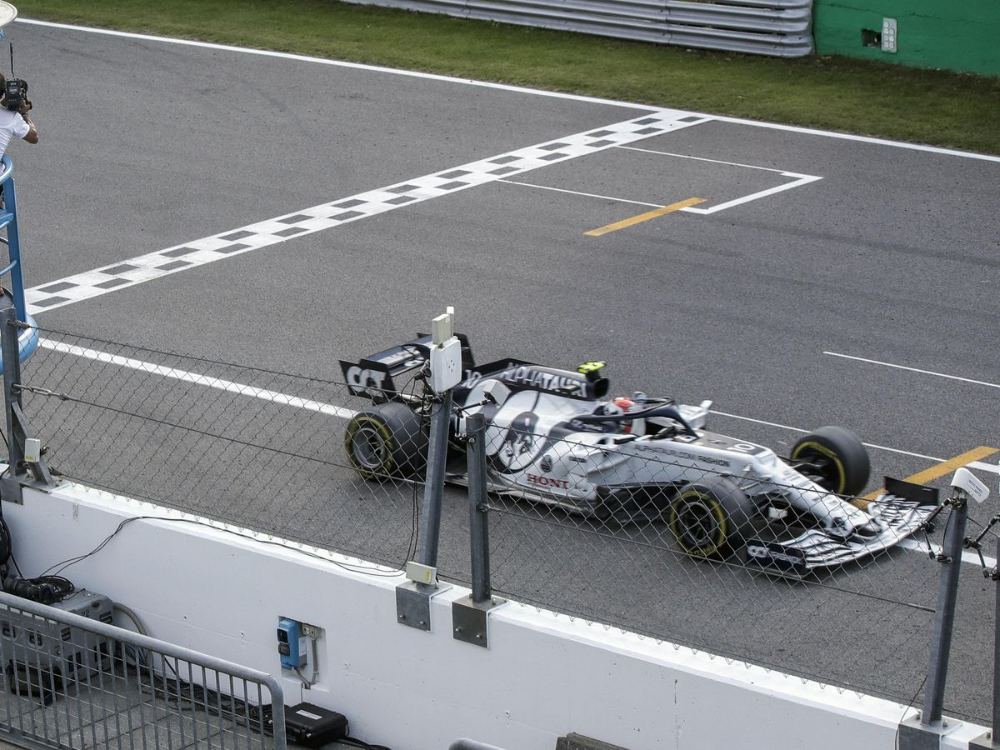
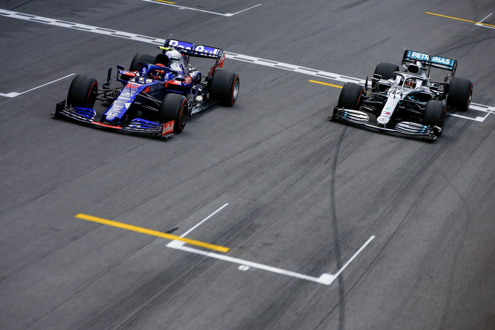

The White and Navy Clad AT01 at the historic 2020 Italian Grand Prix
 An incredible 2020 Italian Grand Prix saw AlphaTauri’s Pierre Gasly claim a maiden Formula 1 win from the McLaren of Carlos Sainz
and the Racing Point of Lance Stroll, as a transgression under the Safety Car saw polesitter Mercedes’ Lewis Hamilton forced to serve a 10-second stop/go penalty, leaving him seventh at the flag. That left Gasly at the head of the field, after he’d pitted before the Safety Car was brought out, with the Frenchman holding on brilliantly to take a sensational maiden win in Formula 1 at AlphaTauri’s home race,
as McLaren’s Carlos Sainz finished second, with Racing Point’s Lance Stroll completing the podium.
The 2019 Challenger
The Dark Blue Toro Rosso Racing to 2nd Place in Brazil
 But with two laps to go when the race restarted, Hamilton tagged Albon, leaving the Thai driver to finish P14, while Gasly was able to hold off Hamilton in a drag race to the line to claim his own first podium in F1 – with the stewards later handing Hamilton a five-second penalty for his part in the Albon incident, which ultimately
dropped him to P7. Behind, a great day for Carlos Sainz saw him make it from P20 at the start to P4, before later getting promoted to his first top-three finish after Hamilton's penalty. He finished
ahead of the Alfa Romeo pair of Kimi Raikkonen and Antonio Giovinazzi, with Renault’s Daniel Ricciardo sixth, Hamilton seventh, McLaren’s Lando Norris eighth, while Racing Point’s Sergio Perez and the second Toro Rosso
of Daniil Kvyat rounded out the top 10.